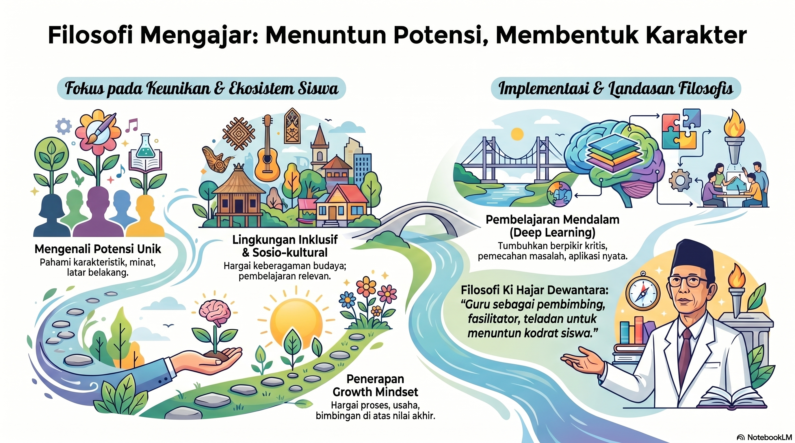

Ni Luh Erna Budiartini, S.Pd.
- Nama Lengkap: Ni Luh Erna Budiartini, S.Pd.
- NIM: 2664826022
- LPTK Penyelenggara: Universitas Pendidikan Ganesha
- Sekolah PPL Terbimbing: SMP Negeri 6 Singaraja
- Mata Pelajaran Diampu: Informatika
- Pendidikan Profesi Guru (PPG) Calon Guru (ekarang)
- Sarjana Pendidikan (S1) - Pendidikan Teknik Informatika(Undiksha)
- Pendidikan Menengah Atas - SMA Negeri 1 Seririt
"Mendidik bukanlah sekadar menuangkan air ke dalam cawan kosong, melainkan upaya menyalakan api kesadaran, menuntun kekuatan kodrat kemanusiaan anak agar tumbuh merdeka seutuhnya."
Artifak Pembelajaran
Infografis & Berkas Modul Ajar

Infografis & Lembar Kerja Peserta Didik

Infografis & Instrumen Penilaian

Refleksi Kritis
1. Apa yang telah dipelajari sepanjang tahapan PPL Terbimbing?
Saya menyadari bahwa merencanakan pembelajaran bukanlah aktivitas administrasi formal semata, melainkan proses merancang pengalaman emosional intelektual siswa yang adaptif dan merdeka.
2. Pengalaman menantang apa yang dihadapi dan solusinya?
Mengelola keaktifan kelas instruksional agar merata. Solusinya adalah mengimplementasikan metode diskusi kelompok berbasis pembagian kartu peran (*role card*).
Filosofi Mengajar
Mmengajar adalah proses menuntun peserta didik untuk mengembangkan potensi yang dimilikinya, bukan sekadar menyampaikan materi pelajaran. Melalui pengalaman observasi, asistensi, dan praktik pembelajaran terbimbing, saya menyadari bahwa setiap peserta didik memiliki karakteristik, kemampuan, minat, dan kebutuhan belajar yang berbeda. Oleh karena itu, pemahaman terhadap peserta didik menjadi dasar penting dalam merancang pembelajaran yang bermakna dan sesuai dengan kebutuhan mereka. Saya meyakini bahwa pembelajaran yang efektif adalah pembelajaran yang berpusat pada peserta didik. Sejalan dengan konsep Pembelajaran Mendalam (Deep Learning), saya berusaha menciptakan pengalaman belajar yang mendorong siswa untuk aktif berpikir, berdiskusi, memecahkan masalah, dan menghubungkan materi dengan kehidupan sehari-hari. Dengan demikian, pembelajaran tidak hanya menghasilkan pemahaman konsep, tetapi juga membangun keterampilan berpikir kritis, kreativitas, kolaborasi, dan komunikasi.

Saya juga percaya bahwa setiap peserta didik memiliki kemampuan untuk berkembang melalui usaha dan proses belajar yang berkelanjutan. Prinsip ini sejalan dengan konsep Growth Mindset, yang memandang bahwa kemampuan dapat ditingkatkan melalui kerja keras, ketekunan, dan dukungan yang tepat. Karena itu, saya berupaya menciptakan lingkungan belajar yang aman, positif, dan menghargai proses sehingga peserta didik berani mencoba, belajar dari kesalahan, dan terus berkembang. Filosofi mengajar saya berlandaskan pemikiran Ki Hajar Dewantara bahwa pendidikan adalah proses menuntun kodrat anak agar mencapai keselamatan dan kebahagiaan setinggi-tingginya. Selain itu, saya memahami bahwa latar belakang sosial dan budaya peserta didik turut memengaruhi proses belajar mereka. Oleh karena itu, saya berkomitmen untuk menjadi guru yang menghargai keberagaman, membangun hubungan yang positif dengan peserta didik, serta menerapkan prinsip Ing Ngarsa Sung Tuladha, Ing Madya Mangun Karsa, Tut Wuri Handayani dalam menjalankan peran sebagai guru profesional.
Quotes Pendidikan Favorit
"Anak-anak hidup dan tumbuh sesuai kodratnya sendiri. Pendidik hanya dapat merawat dan menuntun tumbuhnya kodrat itu."
— Ki Hadjar Dewantara